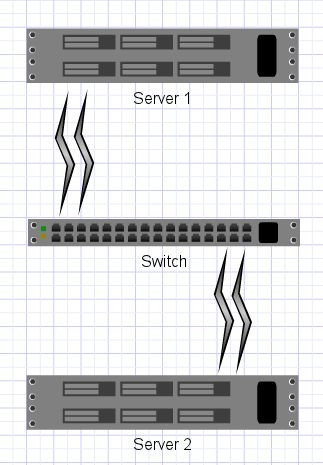

Achieving Awesome Single-Stream Performance Over Bonded Ethernet
Ethernet Link Aggregation (aka PortChannel, Etherchannel, ethernet bonding, NIC teaming, trunking, link bundling, Smartgroup, Ethertrunk, etc) is a way to combine multiple Ethernet links to a single logical link. This improves redundancy and increases aggregate performance. It is good stuff, especially if you are into High Availability.
Here is a typical setup: 
{kind=link}
A good start. If you can spare the ports and cables to make this work, you should do it. You get the benefit of very fast fail-over between links if one dies. And you get the aggregated bandwidth. However, you probably will not get the combined bandwidth over a **single **tcp stream. The reason for this is that the switch probably does not round-robin the ethernet frames to the source server. Usually switches have a configurable algorithm for switching frames over bonded links. Here are some options on my switch:
10g-nexus(config)# port-channel load-balance ethernet ?
destination-ip Destination IP address
destination-mac Destination MAC address
destination-port Destination TCP/UDP port
source-dest-ip Source & Destination IP address
source-dest-mac Source & Destination MAC address
source-dest-port Source & Destination TCP/UDP port
source-ip Source IP address
source-mac Source MAC address
source-port Source TCP/UDP port
Yea, no round robin. As referenced in http://www.kernel.org/doc/Documentation/networking/bonding.txt :
Many switches do not support any modes that stripe traffic (instead choosing a port based upon IP or MAC level addresses); for those devices, traffic for a particular connection flowing through the switch to a balance-rr bond will not utilize greater than one interface’s worth of bandwidth.
If you do know of a switch that supports striped frames, please contact me. But! There is a way to work around this limitation and achieve Awesome performance! It costs an extra switch, but the benefits are double performance and the ability to withstand a switch failure. Here is a crappy diagram:
{kind=link}
This is what is suggested in Section 12 in http://www.kernel.org/doc/Documentation/networking/bonding.txt
With this setup, each switch makes its own decision about where to send a frame, but it only has one choice, sort of. In a sense, no matter what aggregation algorithm you have on the switch, it doesn’t matter. What matters is the algorithm on the sending server. (round robin in my case)
The end result give you key benefits:
- Resiliency for individual links (failure of cables / optics / nics )
- Resiliency for switches (failure of a switch, powersupply, etc?)
- Better than single-link performance on single streams
- iperf bragging rights?
Proof is in the pudding:
root@server1:~# iperf -c server2
------------------------------------------------------------
Client connecting to server2, TCP port 5001
TCP window size: 27.9 KByte (default)
------------------------------------------------------------
[ 3] local 192.168.0.2 port 38576 connected with 192.168.0.1 port 5001
[ ID] Interval Transfer Bandwidth
[ 3] 0.0-10.0 sec 21.1 GBytes 18.1 Gbits/sec
Exact Components in this setup (if you want to reproduce my work)
- Fast servers from SiliconMechanics.com (~$10k, high end)
- Myricom 10G-PCIE2-8B2-2S Dual Port Nics (Works great, built in kernel support, supports bonding, etc. ~$700 each)
- Inexpensive 10G copper cables (Get the right length you need, not something you can crimp. ~$50 each. You will need a bunch of course)
- 2X Cisco Nexus 5548 (Fancy. ~$15k per)
- Round Robin Bonding on the Linux server side
- Switch Config Setup for Virtual Port Channel by some awesome networking dudes
In the end it breaks down to about $2000 per 20g bond. (taking into account switch ports, nics, cables, etc) If your speed and availability can justify that cost, then it is a cool setup.
Comment via email